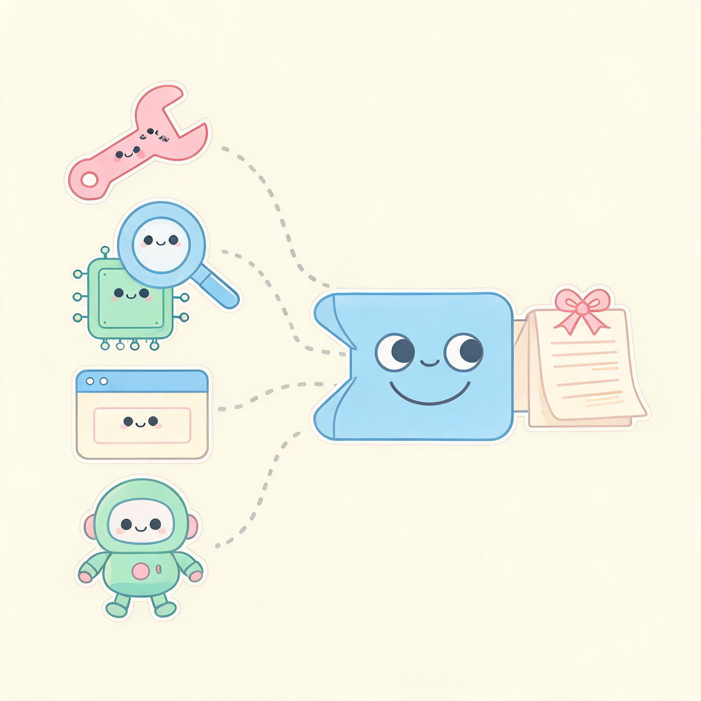

你可以把它当成一个「会看软件的小助手」：
把一个软件丢给它，它就翻箱倒柜帮你搞明白——这东西到底在干什么。
不用记任何术语。记住这三个比喻，你就懂了一半。
Ghidra、IDA、Hopper、浏览器调试、手机反编译……这些工具各说各的方言。REA 把它们统一翻译成同一套「人话」。
它不只给你一个结论，还会交代：哪句是亲眼看到的、哪句是推出来的、哪句还不确定。
所有分析都在你本机完成，东西不外传。它还帮你看好自己启动的程序，用完就收拾干净。

把它想成一栋五层的小楼：上面是入口，下面打地基，中间才是真正干活的地方。
flowchart TB
subgraph L1["① 入口层：谁来用它"]
CLI["命令行 CLI"]
MCP["AI 助手接口 MCP"]
end
subgraph L2["② 组合层：先把工具摆好，但不动手"]
WIRE["装配台 createBinarySession"]
end
subgraph L3["③ 应用层：真正思考的大脑"]
SESS["会话：认准一个目标"]
ROUTE["挑工具：SessionProviderRouter"]
LEDGER["证据账本：记下一切"]
end
subgraph L4["④ 引擎层：被统一的一堆工具"]
GH["Ghidra"]
IDA["IDA"]
HOP["Hopper"]
JADX["Android / JADX"]
BROWSER["浏览器 / Electron"]
MISC["固件 / EVM / .NET…"]
end
subgraph L5["⑤ 地基：管好进程，守住规矩"]
PROC["进程管家：自己生的程序自己管"]
DOM["领域规则：事实 / 推断 / 未知"]
end
CLI --> WIRE
MCP --> WIRE
WIRE --> SESS
SESS --> ROUTE
SESS --> LEDGER
ROUTE --> GH
ROUTE --> IDA
ROUTE --> HOP
ROUTE --> JADX
ROUTE --> BROWSER
ROUTE --> MISC
GH --> PROC
PROC --> DOM
DOM -.约束整个流程.-> SESS
| 楼层 | 它负责 | 为什么这样设计 |
|---|---|---|
| ① 入口层 | 接住人的命令，或接住 AI 的请求 | 两种入口共用同一套内部逻辑，不会「一边一个样」 |
| ② 组合层 | 把工具提前摆好、登记好 | 只摆不启动；某个工具没装好，也不连累其他工具 |
| ③ 应用层 | 认目标、挑工具、记账 | 选工具是「确定性的」：不该猜的时候就直接报错，绝不偷偷换一个 |
| ④ 引擎层 | 把各家工具的方言统一成一套 | 各家的私有协议只留在这一层，不往上传染 |
| ⑤ 地基 | 管进程、定规矩 | 所有权清晰：谁启动的程序谁负责清理 |
这是最实用的一张表：你手里的东西长什么样，就决定了 REA 派哪个小组去处理。
| 你手里是什么（媒介 / 平台） | REA 派哪个「科室」 | 要额外装引擎吗 |
|---|---|---|
| Windows / macOS / Linux 上的可执行程序 | 原生深度分析引擎：Hopper、Ghidra 或 IDA | 需要，三选一 |
| 网页，或 Electron 桌面应用 | 浏览器小组（走调试协议 CDP） | 不需要 |
| JavaScript / 前端代码 | V8 检查器小组 | 不需要 |
| .NET 程序 | .NET 静态分析小组 | 不需要 |
| 安卓手机 App（APK） | 安卓小组（JADX） | 需要 JDK |
| 路由器 / 摄像头固件镜像 | 固件小组（binwalk 等解包） | 需要 |
| 区块链智能合约（字节码） | EVM 小组 | 不需要 |
| Linux 程序崩溃现场（进程 + 内存） | 调试小组（pwntools / 调试器） | 需要 |
从你开口到拿到结论，中间就这六步，像流水线一样。
flowchart TB
A["你：帮我看看这个软件"] --> B["签收：确认看的是哪个文件"]
B --> C["挑工具：选一个最合适的引擎"]
C --> D["干活：引擎在后台跑出事实"]
D --> E["记账：标注看到 / 推出 / 还不确定"]
E --> F["回复：结论连同证据一起给你"]
一个脑袋，两张嘴。 命令行和 AI 助手用的是同一套逻辑，看到的结果必然一致。
工具是借来的，规矩是自己定的。 引擎（Ghidra、IDA、Hopper…）靠你自己装；但「怎么问、怎么记证据、怎么管进程」由 REA 说了算。
它从不假装知道。 事实、推导、猜测分得清清楚楚，未知项也如实上报——这正是一个逆向工具最该有的诚实。